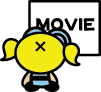

The MOVIEについて考えるうちはコミック版専門って宣言しちゃってるので、アニメの話は番外編ってことでこちらに書きます。 |
|
待望のパワパフの映画ですよ。ああ、見たとも。見させていただきましたとも。 「感動した」「絵がスゲエ」「スピード感があっていい」「正当派のストーリー」「モジョがかっこいい」「ヒネリがなさずぎる」「後半ダレる」「いまさらオリジンもないだろう」「サルがくどい」「それより早く新シリーズやってくれ」「客がオレしかいなかったよ」「見てない」 「映画版パワパフとは、いったなんだったのか？」 「壮大なFAQ（よくある質問とその答え）である！」 これです。 映画版のパワパフはアニメでいえば、エピソード1にあたる存在なんて言われてますが、 最初の物語ではなく、パワパフという物語のための設定資料。 言い換えれば、「パワパフシリーズを見てきて人たちから質問されていたことへの回答」を物語という形をとって公開したもの。ってことですわ。 クレッグさんが、インタビューやらなんやらで、「・・・はどうしてなんですか？」と聞かれることにウンザリしたので、それをすべて答えてしまえ、これみりゃわかるっしょ、てなことで作られたエピソードなのである。そう考えると、この映画の存在意義がスッキリする。そしてより深くガールズの世界が広がってゆくのだ。 まず、なぜ、「誕生秘話」なのか？ アメリカンカートゥーンアニメにおいてオリジン、すなわち物語の時間上での第一回がないってことはけっこうある。物語よりキャラクターありきなので、それでもOKなのだ。 さてそんな中、パワパフにはそれがなかった。 スーパーパワーを持っている主人公はそれこそ、ネズミだろうがアリだろうが、カメだろうが宇宙人だろうが、そして幼稚園児だろうが正義を守る「スーパーヒーロー」であるという強固な「お約束」により、説明なくしてすでに成り立つのである。 ゆえに、「誕生秘話」はあのオープニングだけで十分であるにもかかわらず、あえてこの物語にしたのは、映画の目的にもっともふさわしく、やりやすかったからである。「初めて見る人達にもわかるように」といった理由はただのごまかしなのだ。そもそも「初めて」なんて人は見に来るわけがない。PpGを知っている人しか見に来ないことは分かりきっている。 では、実際にこれが「説明」の物語であることを検証してゆこう。この映画によって、パワパフの謎が大きく解明されてゆくことがわかるからだ。 ■犯罪都市タウンズビルタウンズビルは犯罪であふれていた・・・ すばらしい！この設定を考えたクレッグさんはまさに天才である。なぜなら、この設定一つで様々なことが説明がつくからだ。 犯罪だらけということは、裏を返せば警察能力が低いことである。 アニメでは、犯罪者たちが何度も刑務所にいれられながらも、いつのまにか出所している。まずはそれに対する回答だ。理由は警察の力が非常に弱いから。もしくは、検察の力が弱いからだろうか。アニメを見る限り、留置はされても裁判によって実刑判決がでたものの数はかなり低いだろうということは予測できる。どちらにしても総合的にみて、とても頼りない存在であることは言うまでもないだろう。 そしてそんななかで生活しているユートニウムはおそらくノイローゼ状態であったことも推測できる。「完璧な少女を造ればきっとよくなる」などという常軌を逸した発想もこのためだ。少年時代に「謎の少女たちに助けられた」ことが科学者となるきっかけではあったが、ガールズ以前に試作品がなかったことを考えると、あくまでもきっかけにすぎず、成長してからはただの思い出にすぎないものであったろう。しかし、荒廃した生活により追いつめられたユートニウムにとって、その記憶こそが「望み」へと転化され、あの異常な実験（お砂糖やスパイスで女の子が作れると思ったこと）へと導いたのだ。 プロフェッサーの精神状態がまともでなかったのは、ペットのサルJOJOの行動をみればあきらかだ。ペットは飼い主の精神状態を敏感にキャッチし、感化されやすいものだ。ペットのJOJOがあれほどヒステリックに暴れているのはそのせいだろう。また、この間ユートニウムがJOJOの世話をまったくやっていなかったことも考えられる。MOJO
JOJOの孤独感はこのときすでに芽生えていたのかもしれない。だからこそ、ガールズが誕生したと同時に姿を消したのだ。 ■ガールズ誕生間違ってケミカルXを・・・ すなわち、この時点ではプロフェッサーはケミカルXの効力をまったくわかっていなかったことになる。このあたりは謎のままだが、注目したいのは、この爆発のショックでJOJOは知能が増大しMOJO
JOJOとなったことだ。ではプロフェッサーは何も影響がなかったのだろうか？いや、影響があったはずだ。JOJOのように身体的な特徴として発現はしていないが、その頭脳は大幅に強化されている。 さてこの後、ガールズの名前づけになるわけだが、ここも重要だ。 最初に名前が与えられるのはブロッサムである。 このことから心理分析をおこなってみると色々おもしろそうだが、後はみなさんの想像にまかせよう。 そして、表層的だが、ガールズの部屋が2階にあることと、丸窓の理由があきらかにされる。 そうそう、バブルスが特に「オクティー」を大事にする理由わかる。プロフェッサーからの最初のプレゼントだからだ。当のプロフェッサーはきっと忘れてるだろうけど、こういったことは意外に心にのこるものだ。 ■ポーキーオークス幼稚園さて、ガールスも普通の子らと同じように幼稚園へ通うこととなるのだが、ひっかかることはないだろうか？ポーキーオークス幼稚園ってこんなに遠かったっけ！？ TVではガールズは飛んでいってしまうので、あんまり距離感を感じなかったが、この幼稚園、プロフェッサーの自宅から車で市街を抜けていかなければいかないほど遠い。プロフェッサーの家はほかにも家々が立ち並ぶ住宅地であるのに、もっと近くになかったのだろうか？ これについて考えられるのは以下の3つ
この場合、1.が有力だろう。これは極端だとしても、「プロフェッサーの自宅の近くに幼稚園がない」とも考えられる。この説を補強するのはTVシリーズでのガールズの日常である。出動がかからない時間にガールスが何をしているかというと、TVを見たりゲームをしたりとインドア系の遊びばかりである。これはまわりに同い年の子供がいないことを指しているのではないだろうか。ゆえに、隣にロビンが引っ越してきた時に異常なまでにはしゃぐこととなったのだ。それならば、住宅地といえど子供過疎地であるがゆえに、幼稚園がないのもうなずける。そして、そうであるならば、プロフェッサーの住む地域は古いベットタウンで高齢化がすすんでいるのだろうことも推測できる。 さて、2.もあの「プリンセス」が転入してきたことを考えると捨てがたいが、これは1.の理由でも説明はつくだろう。そもそも、「プリンセス」が転入してきたことででポーキーオークスがなんらかの理由で特別であることに気づくべきだったのである。ギャングリンギャング転入もしかりだ。で、3.だが、その後のプロフェッサーのキーン先生に対する態度を見てみると、ちょっと薄いようだ。ただ、二人が幼なじみであることを考えると、彼女が勤務している幼稚園を真っ先に思い浮かべたであろうことは容易に推測できる。 ■激しい追いかけっこさて、映画前半の見せ場「追いかけっこ」。ここでスーパーパワーに無自覚なガールズが町を破壊しまくることになる。物語的にはこれが後半の「スーパーパワーを正義のために使う」ことへの重要な基点となるわけだが、今回も「FAQ」的な見方でこの事件を追ってみよう。 この事件により、プロフェッサーは逮捕される。このことがよっぽど応えたのか、どうも刑務所恐怖症になったのではないかと思われる。『うそつきはダメよ！』において、ブロッサムが盗んだゴルフバックの罪により一時逮捕されたときの、あの異常なまでのうろたえぶりがこれで説明できる。冒頭で述べたように、タウンズビルの警察はダメダメなので市民になめられていてもおかしくはないのだが、プロフェッサーは違った。この事件がトラウマになっているに違いない。 さらにキーン先生が自分の生徒が虐待されているにもかかわらず「教室で暴力はダメよ」とこれまた異常なまでの執着をみせるのも、やはりこの事件がトラウマになっているためであろう。 プロフェッサー逮捕のため、お迎えにこれない時に「嫌われたんだよ」と言い出すのが、だれあろうバターカップであることは、上記の心理分析を思い出していただくとありがたい。他のガールズより愛されていないのではと、彼女は心の隅で思っているのかもしれない。それゆえに時として「愛」に対し過剰な反応をみせるのではないだろうか。エースに惚れたのも愛を「他の場所」に求めたゆえか。 市長との激突によってこの壮絶な「追いかけっこ」は終わる。 ■町の徘徊とMOJOとの出会いプロフェッサーが迎えにこないので、徒歩で寂しく家に帰ろうとするガールズ。 ここで、ギャングリンギャングに襲われるのだが、なぜ彼らがこんなところにいるのか？彼らのねぐらは町はずれのゴミ捨て場ではなかったのか？ ということは、この時点であの巨大なゴミ捨て場はまだ存在しなかったのではないかと考えられる。おそらく、ガールズの追いかけっこによって破壊されたタウンズビルから出た大量の廃棄物によって、設置されたのではないだろうか。そして、以後彼らが住み着くこととなったのだろう。 そしてMOJOの登場。 ここで、「良いこと」としてMOJOの研究所を造らされることとなるのだが、なぜ火山の上にあるのかが明らかになる。火山のエネルギーを利用するためである。 そして超サル軍団を集めるために動物園へいくのだが、この動物園、サルの種類が多すぎやしないか？ しかし、実際に（アニメの中で）ガールズのグッズが販売されていることを見てみると、結果としては確かにガールズは「観光の目玉」となっているのである。 この仮説が正しければさらに謎が解ける。 重犯罪者であるMOJOがタウンズビルの公園のど真ん中で平然と暮らしているのは、いかがなものか。と思っていた人はいないだろうか。なんで放置しとくんだ、と。ズバリあの火山の上の展望基地もまた重要な観光資源であると考えると、納得できる。あんな施設はアメリカ中探してもないだろう。そこから得られる観光収入はかなりのもので、かつ「観光」に力をいれているタウンズビルとしては、特例というか、見て見ぬふりというか、必要悪というか、そんな打算によって受けいられているのではないだろうか。 そうして見ると、世界有数の宝石とかが収納されている美術館がタウンズビルに存在しているのも、当然のことだろう。 そして、有る意味パワーパフガールズ最大の謎ともいうべき謎もこれで解けるかもしれない。 そうなると、あの大富豪「プリンセス」がタウンズビルに引っ越してきた理由もわかろうというもの。父のモアバックス氏はおそらく「レジャー系」の実業家であり、タウンズビルから誘致の誘いがあったからであろう。プリンセスの自宅にジェットコースターらのアミューズメント的施設があるのもそのことを裏付ける。 ところで、『カッコよくなりたい！(SUPER ZEROES)』を覚えているだろうか。この回の怪獣はパワパフと戦うためにわざわざ怪獣島からやってきているのである。おそらく他のモンスターもそれと近い理由があるやもしれない。パワーパフガールズがいるから来る。すなわち、モンスター側からも一種の観光のような視点でみられているのだ。 パワーパフガールズがいるから来る。また、これはモンスターらはパワーパフガールズが誕生してからタウンズビルに現れるようになったのではないかということの推論の補強となるが、この命題についてはもう少し先で述べよう。 ともあれ、ガールズを騙し、超サル軍団を作り出すMOJO。 さて、MOJOがその後で見せるようにメカを造って町で暴れるといった作戦でなく、サル軍団を作るという作戦を選んだことに注目したい。これはプロフェッサーに捨てられたと思っているMOJOの「新たな家族」の創造願望であろうことは明白だ。 ■超サル軍団大暴れ良いことをしたと思って、それを見せようとプロフェッサーをつれてくるガールズ。しかし町はサル軍団が大暴れ・・・・ 超サル軍団になすすべもなく破壊されてゆくタウンズビル。 どこで読んだか忘れたがこんなセリフがある「犯罪者がいるからバットマンが必要なのではない、バットマンがゴッサムシティにいるからこそ狂気の犯罪者たちが集まるのだ」と。 モジョの裏切りとプロフェッサーの言葉に傷つきショックで宇宙に去るガールズ このときガールズがたどりついた小惑星群はいったいどこなのか？ TVシリーズにおいてけっこうインベーダーの襲撃があるが、そのうちの一つかもしれない。そもそも、インベーダー達はなにゆえタウンズビルに訪れるのか？ニューヨークではいかんのか？おそらく、このときのガールズの会話を聞いていて、タウンズビルという町の存在を知ったのではないだろうか。そしてその情報により、ターゲットポイントの一つとして登録されたのだと考えられる。 ■帰ってきたガールズ、そして最後の戦い戻ってきたガールズを見て、ユートニウムの心境はいかなるものだったろうか。失言により彼女らを傷つけてしまったことへの悔恨の念は、彼の心に深く刻まれたことであろう。その後の彼のガールズに対する異常なまでの愛情はこのことに大きく起因する。映画ではスポーツカータイプだった自家用車が、TVシリーズではワゴンタイプになっていることからもうかがえる。「わたしができうる限りのことはガールズにしてあげよう」そう思ったに違いない。 うっかりサルをぶちのめしてしまったバターカップ。これによってパワーは正義のために使えば良いことに気が付く。 まあ、ここは分かりやすくていいね。そのまんまだし。 ケミカルXをさらに大量に注入し、巨大猿になるMOJO。 ここで、「フリークスは迫害される、オレの元に来い」なんて誘いをかけるMOJOだが、実はこの映画ではMOJOは、別に市民にどうこうされていない。そもそも町の破壊者ガールズと違い、暴れるのはこの時が初めてなのだ。市民に白い目で見られているのはガールズであって、MOJOではない。にもかかわらず、ここまで思い詰めるのはいったいなんなんだろうか？町を徘徊している時にもしかしたらなんかあったかもしれないが、この短い期間でそこまで思い詰めるにはちょっと無理がありすぎる。 つまり、これは単なる言い訳。プロフェッサーにかまってもらいたいがためのパフォーマンス。 さてそして、ついに巨大MOJOを倒し、MOJOはケミカルX中和剤（antidote chemical X）によって元の姿に戻る・・・・・・・って戻ってないじゃん！！！ どうもおかしい。この薬品は一段階しか効果がないというのか？そもそもすでにケミカルXパワーによってミュータント化しているのに、さらに追加しても意味があるのだろうか？また、TVシリーズではケミカルXによっていろいろなキャラがパワーを得ているが、MOJOは知能が発達しただけで、スーパーパワーを持っていないのはなぜか？ ここがクレッグさんが仕掛けた謎解きの最後の部分だろう。 さてまずケミカルXについてだが、その後ケミカルXによってスーパーパワーを得たものたちというのは、どれも皆、短期間しかスーパーパワーを維持できていないことに注目してみたい。すなわちこの薬品によるミュータント化というのは一時的なものであると推測できる。では、ガールズは？ そこで、MOJOである。 この推論でゆくならば、MOJOのミュータント化もいずれ時間がたてばもとのサルに戻るはずだったに違いない。ただ、パワーパフリスちゃんの例にみるとおり、動物のほうが効果時間は長いようだ。 おお、これは「アルジャーノンに花束を」ではないか！ さて、話は戻って、MOJOのケミカルX追加増強と ケミカルX中和剤。 ところで、このケミカルX中和剤ほんとうに効果のあるものだったのだろうか？なにしろガールズ誕生時点でプロフェッサーはケミカルXそのものの効果をよくわかっていないフシがあるのに、（おそらく実験もしていないだろう）その中和剤にどれほどの効果があるのか疑わしい。ただ、結果をみるとそれなりに成功はしていたようだ。しかし、完全か？というと疑問だ。 私が考えるに、これはケミカルX抑制剤ではなかったろうか。 ケミカルXのパワーを消滅させるものではなく、あくまで過剰なエネルギーを抑え制御する、そんな薬品であったのではないか。（もちろんプロフェッサーは中和剤として作ったつもりだろうが） この抑制効果、いまだにMOJOに機能しているのではないだろうか。 ■そして今日もみんな救われたそして、サルたちはやがて効果がきれて元のサルにもどり、ガールズは「パワーパフガールズ」と呼ばれタウンズビルでを守るスーパーヒーローとして今日も活躍し続けることとなった・・・・ いかがだったろうか。この映画にどれだけの膨大な情報が詰め込まれていたか、そしてそれらがパワパフの謎への回答であり、隠れた設定を明示していたかわかっていただけただろうか。 ただ、それでも解けない謎もある。カレだ。 では、そのときまで、サンキュー、パワーパフガールズ！
・・・あのう、これってシャレで書いたんで、そのへんヨロシク（笑）
|
| 【HOME】【SUGER & SPICE】 |